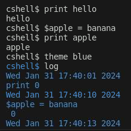

Interactive Mode
My Custom Linux Shell supports the default Linux commands, like pwd and more. It also has commands to print items, change the color of the
text, get a log of all the actions and variable assignment. The interactive mode allows the user to use whatever commands they want in any order,
this is a mode that I believe most users will be familiar with!

Script Mode
Script Mode is a very unique feature where we input a text file that contains a bunch of commands, and the system will complete all the commands in order
automatically. Below I will show an example of a .txt file that can be used for script mode, and then I will show an image of the result of script mode be
used on the text file.


Summary
To summarize, my custom shell acts like a default Linux shell, however it has more commands and even two modes! This entire project was done in C and I did
all of my coding on an Ubuntu virtual machine. Thank you for reviewing this personal project of mine!